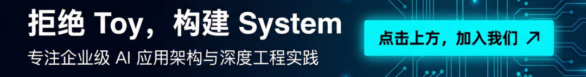
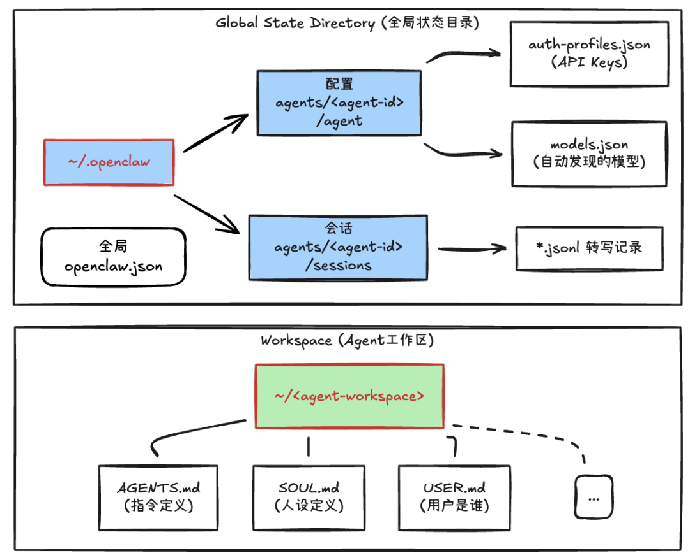
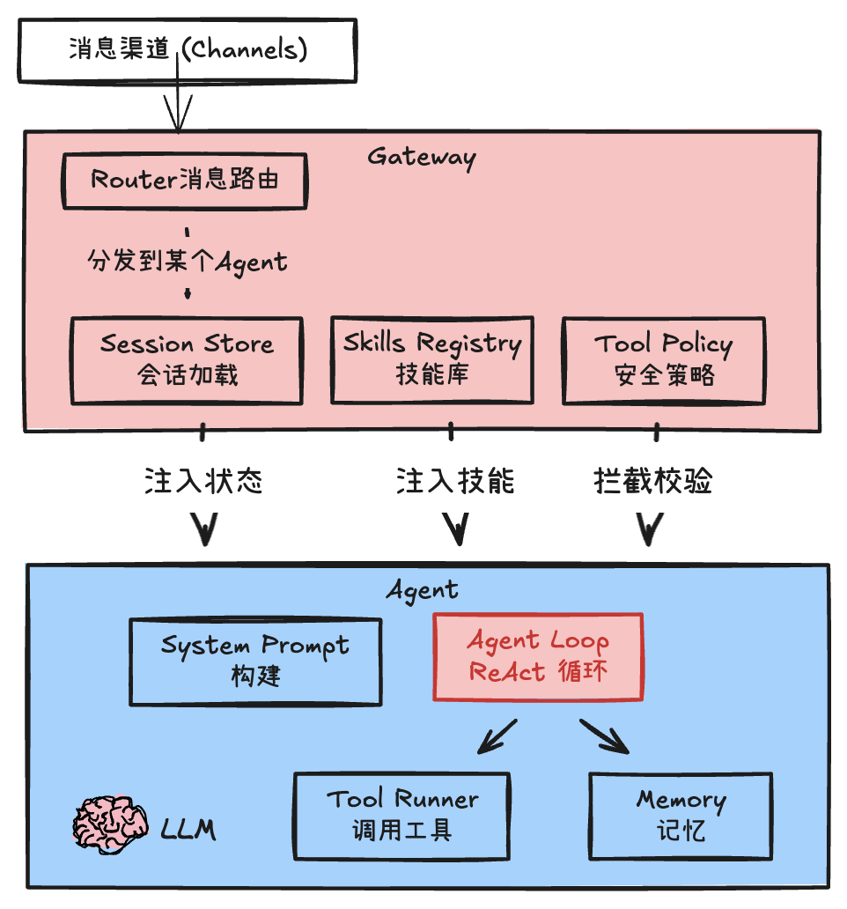
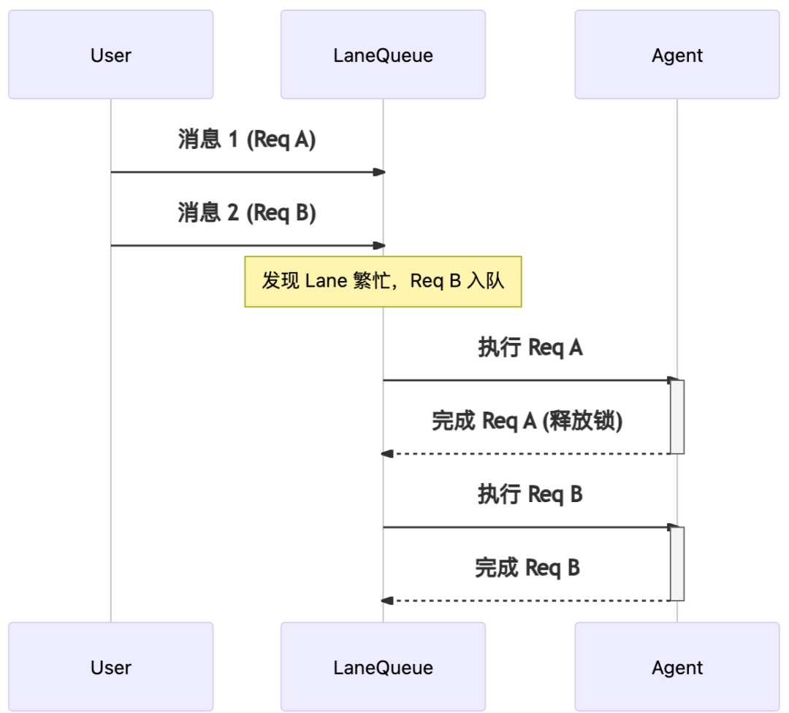
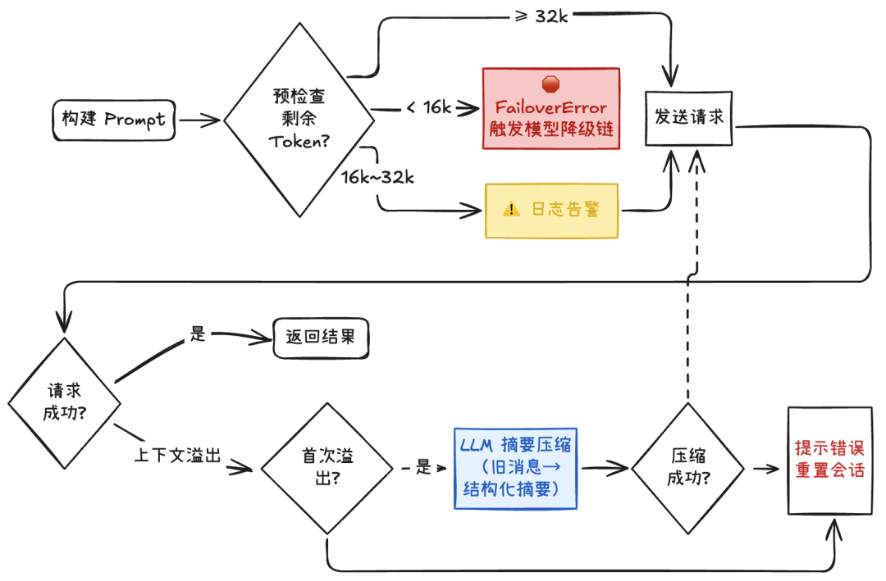
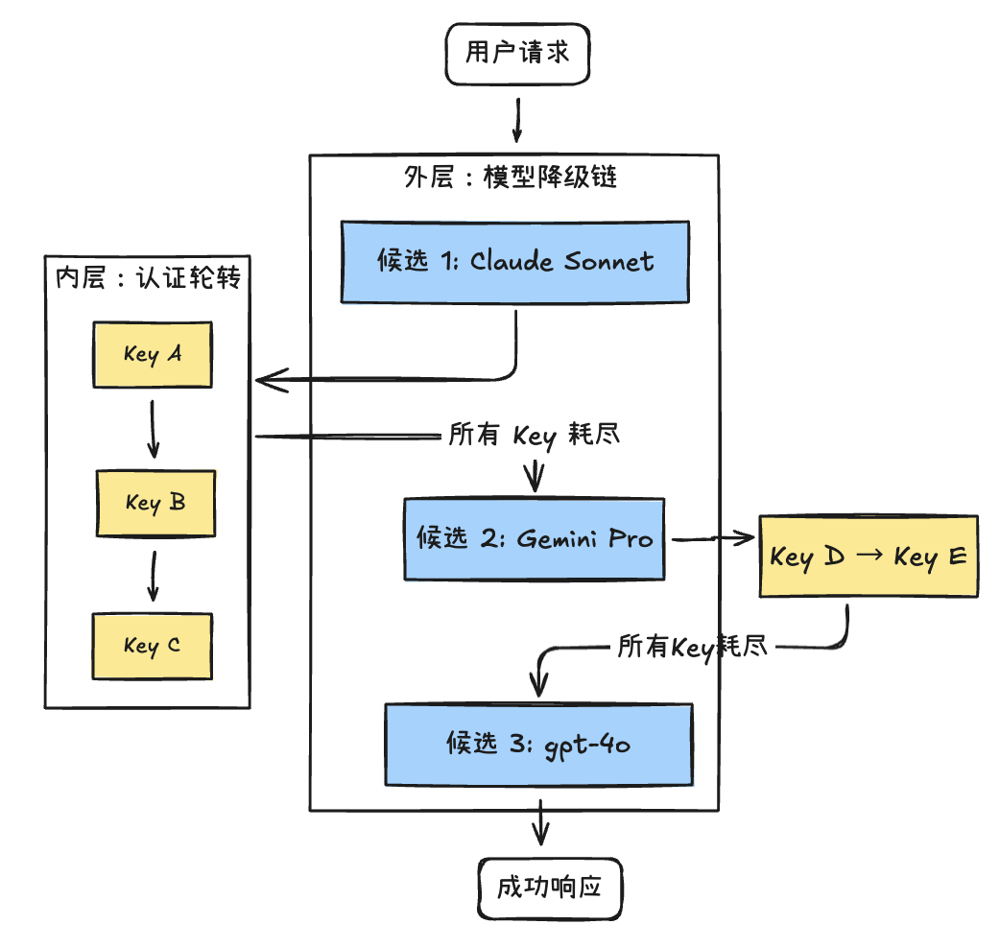

OpenClaw Agent 的“工作室” OpenClaw Agent 的整体架构 调度与并发控制 高可用与容错机制


工作区（Workspace）：Agent 的“办公桌”，保存必要档案与产出
配置（Config）：Agent 使用的、敏感的运行时配置
会话（Sessions）：记录 Agent 和你“聊过什么，干过什么”

Channels：对接外部平台（WhatsApp等），负责消息接入与适配 Gateway：管理与指挥中心，负责将消息路由到某个 Agent、加载 Agent 会话、给 Agent 注入 Skills 索引、给 Agent 配备与注入可用工具 Agent：动态构建上下文（时间、偏好、技能、工具等），并驱动 "思考 -> 工具 -> 结果 -> 思考" 的 ReAct 循环（依赖LLM） LLM：负责推理的大脑。Agent 把推理上下文交给模型，模型输出下一步行动或者结果。
统一接入：全渠道接入、消息适配、路由，进一步承载统一认证/身份体系 统一安全：Gateway 会对高风险工具做把关与物理“拦截”（后文细讲）。好处是：即使Agent误判或被“注入”，也无法越过策略执行高危工具。
并发与资源控制：可以在 Gateway 侧统一做限流、排队、超时等治理策略
type LaneState = {
lane: string;
queue: QueueEntry[]; // 待处理的消息队列
active: number; // 当前并发数，与maxConcurrent配合，但通常为1
draining: boolean; // 是否正在调度中
};
Steer（转向）模式：在一个时间窗（比如2s）内的新消息会被“注入”到正在运行的上一轮 Agent Loop；如果失败，则等待下一轮Loop。场景：
“查询下南京天气” → “记得要最近一周的”
如何“注入”？
目前的方式是在Agent的ReAct循环中的某一次LLM调用结束后的间隙，被追加到消息流，从而参与到下一轮推理中。
Collect（搜集）模式：在时间窗内先等待，把窗口内到达的消息聚合成一条，再作为任务交给 Agent。场景：
“你好”“在吗”“帮我研究下这只股票行情”“代码是 xxxx”
Followup（跟进）模式：按 FIFO 顺序逐条处理，每条消息都作为一次 Agent 任务获得一次完整回复。场景：
“先处理任务1：xxx” → “再处理任务2：xxx”
Interrupt（打断）模式：时间窗内的新消息到来后直接中断当前运行、清空队列并丢弃回复，从新消息重新开始。场景：
“预定今天的会议室” → “不要做了，定明天的会议室”
高频消息队列 = 服务员，客人不断喊话，服务员决定怎么处理： steer：客人紧急修改，赶紧通知到厨房（比如“少放辣”） collect：确定客人说完“再来个…还要个…”，一次性下单 followup：客人每点一道菜，就送厨房一次 interrupt：之前的全部撤单，只做最新这道 Lane车道 = 厨房灶台：不管服务员怎么整理，灶台同一时间只炒一盘菜
Prompt 构建完成但尚未调用 LLM 前：按阈值做 token 预检 通过了预检，但运行过程中仍触发上下文溢出：启动自动压缩 压缩失败：此系统会尝试重置会话，并提示用户


认证轮转：同一个模型Provider内，多个API Key实现自动切换 — 不断尝试下一个不在冷却（指数退避机制）期内的Key，直到成功或所有Key耗尽
模型降级：当某个Provider的所有Key都失败后，自动降级到下一个候选模型。